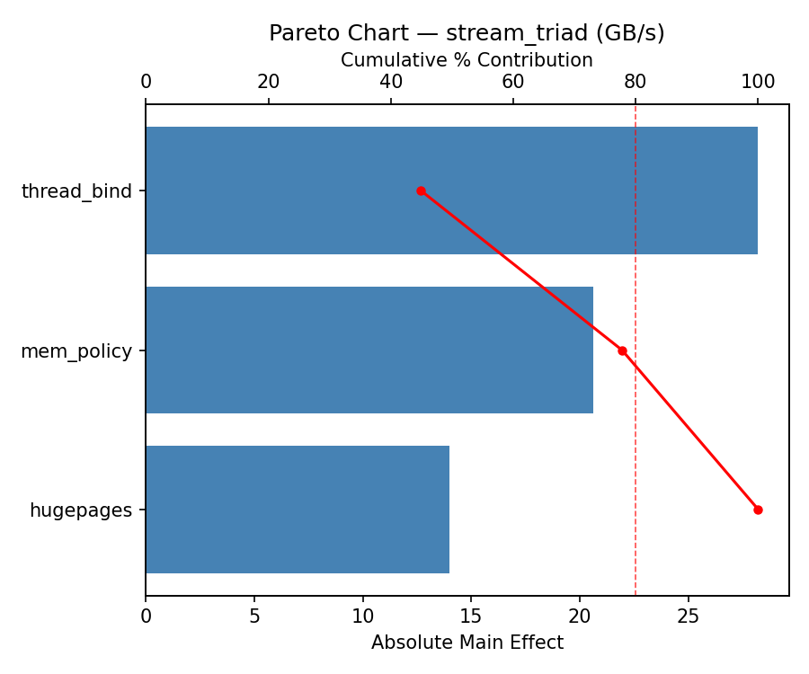
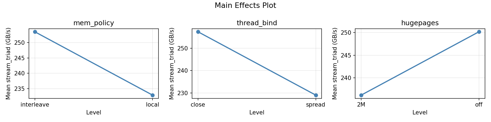
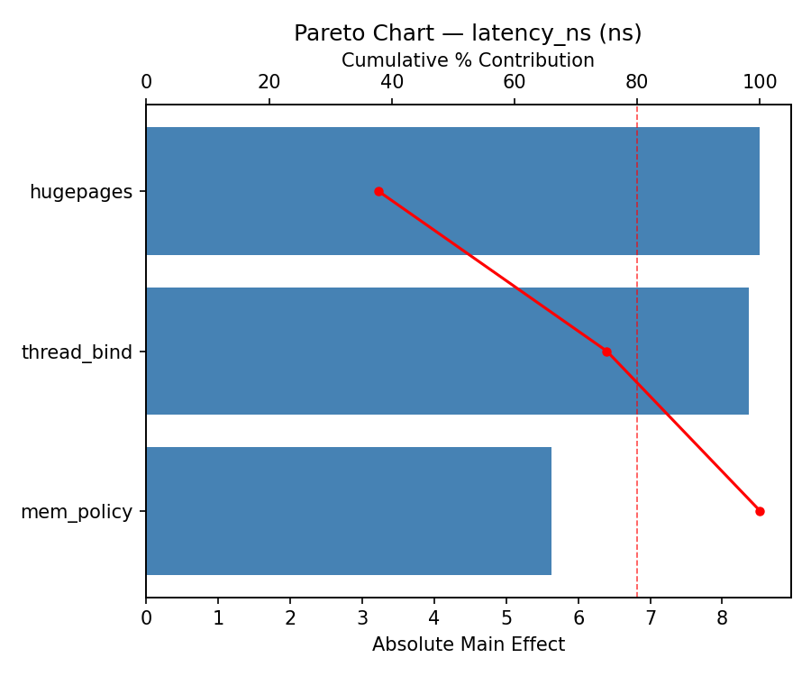
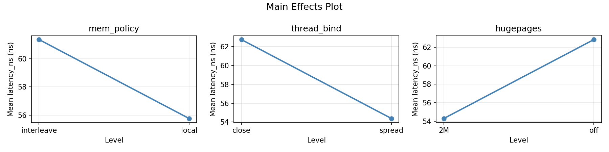

Summary
This experiment investigates numa memory placement. Full factorial design to optimize memory placement and thread binding on a dual-socket NUMA system.
The design varies 3 factors: mem policy, ranging from local to interleave, thread bind, ranging from close to spread, and hugepages, ranging from off to 2M. The goal is to optimize 2 responses: stream triad (GB/s) (maximize) and latency ns (ns) (minimize). Fixed conditions held constant across all runs include sockets = 2, cores per socket = 32.
A full factorial design was used to explore all 8 possible combinations of the 3 factors at two levels. This guarantees that every main effect and interaction can be estimated independently, at the cost of a larger experiment (8 runs).
Key Findings
For stream triad, the most influential factors were mem policy (71.2%), thread bind (17.5%), hugepages (11.3%). The best observed value was 293.9 (at mem policy = local, thread bind = spread, hugepages = off).
For latency ns, the most influential factors were mem policy (43.4%), hugepages (42.1%), thread bind (14.4%). The best observed value was 34.0 (at mem policy = local, thread bind = close, hugepages = off).
Recommended Next Steps
- Consider whether any fixed factors should be varied in a future study.
Experimental Setup
Factors
| Factor | Levels | Type | Unit |
|---|
mem_policy | local, interleave | categorical | |
thread_bind | close, spread | categorical | |
hugepages | off, 2M | categorical | |
Fixed: sockets=2, cores_per_socket=32
Responses
| Response | Direction | Unit |
|---|
stream_triad | ↑ maximize | GB/s |
latency_ns | ↓ minimize | ns |
Experimental Matrix
The Full Factorial Design produces 8 runs. Each row is one experiment with specific factor settings.
| Run | mem_policy | thread_bind | hugepages |
|---|
| 1 | local | spread | 2M |
| 2 | interleave | close | off |
| 3 | interleave | spread | off |
| 4 | interleave | spread | 2M |
| 5 | local | spread | off |
| 6 | interleave | close | 2M |
| 7 | local | close | off |
| 8 | local | close | 2M |
How to Run
$ python doe.py info --config use_cases/10_numa_memory_placement/config.json
$ python doe.py generate --config use_cases/10_numa_memory_placement/config.json --output results/run.sh --seed 42
$ bash results/run.sh
$ python doe.py analyze --config use_cases/10_numa_memory_placement/config.json
$ python doe.py optimize --config use_cases/10_numa_memory_placement/config.json
$ python doe.py optimize --config use_cases/10_numa_memory_placement/config.json --multi
$ python doe.py report --config use_cases/10_numa_memory_placement/config.json --output report.html
Analysis Results
Generated from actual experiment runs.
Response: stream_triad
Pareto Chart

Main Effects Plot

Response: latency_ns
Pareto Chart

Main Effects Plot

Full Analysis Output
=== Main Effects: stream_triad ===
Factor Effect Std Error % Contribution
--------------------------------------------------------------
mem_policy 35.7750 11.1421 51.4%
thread_bind 26.2250 11.1421 37.7%
hugepages -7.5750 11.1421 10.9%
=== Interaction Effects: stream_triad ===
Factor A Factor B Interaction % Contribution
------------------------------------------------------------------------
mem_policy thread_bind 22.0250 54.5%
mem_policy hugepages 9.4250 23.3%
thread_bind hugepages 8.9750 22.2%
=== Summary Statistics: stream_triad ===
mem_policy:
Level N Mean Std Min Max
------------------------------------------------------------
interleave 4 225.3000 23.7380 196.1000 250.3000
local 4 261.0750 30.0114 226.4000 293.9000
thread_bind:
Level N Mean Std Min Max
------------------------------------------------------------
close 4 230.0750 25.0366 196.1000 250.3000
spread 4 256.3000 35.1010 217.3000 293.9000
hugepages:
Level N Mean Std Min Max
------------------------------------------------------------
2M 4 246.9750 34.2391 217.3000 293.9000
off 4 239.4000 33.2692 196.1000 276.5000
=== Main Effects: latency_ns ===
Factor Effect Std Error % Contribution
--------------------------------------------------------------
mem_policy 14.0250 5.1510 51.8%
thread_bind 8.5250 5.1510 31.5%
hugepages 4.5250 5.1510 16.7%
=== Interaction Effects: latency_ns ===
Factor A Factor B Interaction % Contribution
------------------------------------------------------------------------
thread_bind hugepages 16.5250 53.8%
mem_policy thread_bind 9.2250 30.0%
mem_policy hugepages -4.9750 16.2%
=== Summary Statistics: latency_ns ===
mem_policy:
Level N Mean Std Min Max
------------------------------------------------------------
interleave 4 51.5500 15.3921 34.0000 68.4000
local 4 65.5750 11.2796 52.4000 78.3000
thread_bind:
Level N Mean Std Min Max
------------------------------------------------------------
close 4 54.3000 7.7158 44.2000 61.0000
spread 4 62.8250 19.6798 34.0000 78.3000
hugepages:
Level N Mean Std Min Max
------------------------------------------------------------
2M 4 56.3000 15.6499 34.0000 70.6000
off 4 60.8250 15.3854 44.2000 78.3000
Optimization Recommendations
=== Optimization: stream_triad ===
Direction: maximize
Best observed run: #4
mem_policy = interleave
thread_bind = spread
hugepages = 2M
Value: 293.9
RSM Model (linear, R² = 0.20):
Coefficients:
intercept: +243.1875
mem_policy: -0.5625
thread_bind: +11.3375
hugepages: -6.5625
Predicted optimum:
mem_policy = interleave
thread_bind = spread
hugepages = 2M
Predicted value: 261.6500
Factor importance:
1. thread_bind (effect: 22.7, contribution: 61.4%)
2. hugepages (effect: -13.1, contribution: 35.5%)
3. mem_policy (effect: -1.1, contribution: 3.0%)
=== Optimization: latency_ns ===
Direction: minimize
Best observed run: #8
mem_policy = local
thread_bind = close
hugepages = 2M
Value: 34.0
RSM Model (linear, R² = 0.03):
Coefficients:
intercept: +58.5625
mem_policy: -0.3375
thread_bind: +2.3375
hugepages: +0.4125
Predicted optimum:
mem_policy = interleave
thread_bind = spread
hugepages = off
Predicted value: 61.6500
Factor importance:
1. thread_bind (effect: 4.7, contribution: 75.7%)
2. hugepages (effect: 0.8, contribution: 13.4%)
3. mem_policy (effect: -0.7, contribution: 10.9%)
Multi-Objective Optimization
When responses compete, Derringer–Suich desirability finds the best compromise.
Each response is scaled to a 0–1 desirability, then combined via a weighted geometric mean.
Overall Desirability
D = 0.5441
Per-Response Desirability
| Response | Weight | Desirability | Predicted | Dir |
|---|
stream_triad |
1.5 |
|
247.50 0.5232 247.50 GB/s |
↑ |
latency_ns |
1.0 |
|
52.40 0.5770 52.40 ns |
↓ |
Recommended Settings
| Factor | Value |
|---|
mem_policy | local |
thread_bind | spread |
hugepages | 2M |
Source: from observed run #1
Trade-off Summary
Sacrifice = how much worse than single-objective best.
| Response | Predicted | Best Observed | Sacrifice |
|---|
latency_ns | 52.40 | 34.00 | +18.40 |
Top 3 Runs by Desirability
| Run | D | Factor Settings |
|---|
| #4 | 0.5144 | mem_policy=interleave, thread_bind=close, hugepages=off |
| #6 | 0.4977 | mem_policy=local, thread_bind=close, hugepages=off |
Model Quality
| Response | R² | Type |
|---|
latency_ns | 0.1848 | linear |
Full Multi-Objective Output
============================================================
MULTI-OBJECTIVE OPTIMIZATION
Method: Derringer-Suich Desirability Function
============================================================
Overall desirability: D = 0.5441
Response Weight Desirability Predicted Direction
---------------------------------------------------------------------
stream_triad 1.5 0.5232 247.50 GB/s ↑
latency_ns 1.0 0.5770 52.40 ns ↓
Recommended settings:
mem_policy = local
thread_bind = spread
hugepages = 2M
(from observed run #1)
Trade-off summary:
stream_triad: 247.50 (best observed: 293.90, sacrifice: +46.40)
latency_ns: 52.40 (best observed: 34.00, sacrifice: +18.40)
Model quality:
stream_triad: R² = 0.0475 (linear)
latency_ns: R² = 0.1848 (linear)
Top 3 observed runs by overall desirability:
1. Run #1 (D=0.5441): mem_policy=local, thread_bind=spread, hugepages=2M
2. Run #4 (D=0.5144): mem_policy=interleave, thread_bind=close, hugepages=off
3. Run #6 (D=0.4977): mem_policy=local, thread_bind=close, hugepages=off